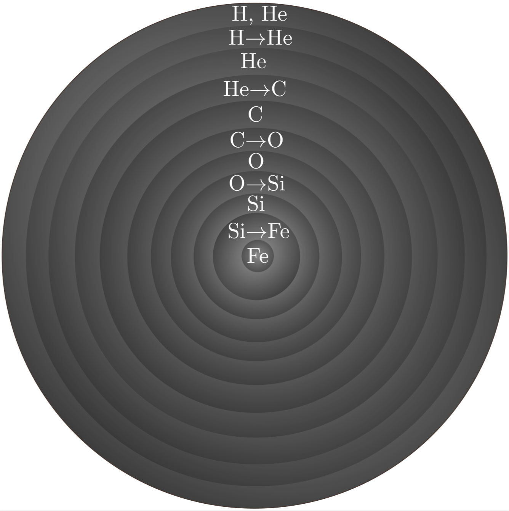

Forrige side🙂 🙁Stjerner med høy massePADLET
 Vi har altså en slik stjerne. Jern kan ikke fusjonere videre. Vi har ingen fusjonsreaksjoner som kan gi nok trykk til a stå imot tyngdekrafta fra denne massive stjerna. Hva tror du skjer da? Bruk fysisk tenking, hva er de mulige utfallene tror du? Hva må skje videre?